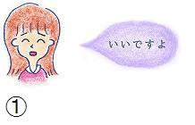
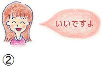
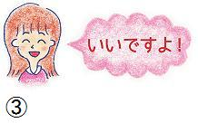
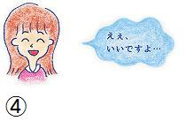
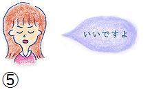
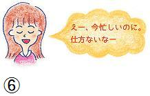

31: 表情や声に注目してみよう♪
・非言語情報から本音と建前を見抜く！
前回は、本音と建前が読みとれない3つの原因と解決策についてお伝えしました。今回から解決策を詳しく解説していきます。
今回は、本音と建前を読み取る上で重要な、“非言語コミュニケーション"について述べていきたいと思います。
・要の非言語コミュニケーション
相手の本音と建前を見抜くには、非言語コミュニケーションが非常に大事になってきます。なぜなら言葉以外の部分にこそ、相手の本音や建前が表れやすいからです。
私たちの普段の会話では、表情やしぐさ、間の取り方などから、相手が今どんなことを思っているのか、何を考えているかなどを判断しています。
ですから、非言語コミュニケーションの能力を身につけることは、相手の本音と建前を読み取る上で欠かせないスキルとなります。
では、どのようなことをポイントとして押さえていけばいいのでしょうか？
・言語‐非言語の一致が大事！
では、非言語コミュニケーション能力を身につけるためのポイントを解説していきます。そのポイントとは「言語」と「非言語」が一致しているかを見るということです！
例えば、相手があなたに「ふざけんなよ」と言ったとします。 その表情が険しく、声が大きくきつい口調であれば、相手は怒っているのだなと判断します。
一方、「ふざけんなよ」と言いつつも、表情は笑って、声はゆっくりで穏やかであれば、冗談なんだなということがわかります。
同じ「ふざけんなよ」と言った言葉でも、その意図は大きく異なります。 本当の意図というのは、表情や声の抑揚といった非言語の部分に表れやすいものです。 つまり、相手の言った「言語」と、そこに表れる「非言語」が一致しているかを見抜くということが、本音と建前を知るために大切です。
今回は、特に「言葉」、「表情」、「声の抑揚」の3つが一致しているかをチェックしていってみましょう♪
・本音と建前を見抜くスキルを伸ばそう！
それでは、実際の会話をつかった問題に取り組みながら、非言語の一致について確認していきましょう。
問題１
あなたはAさんに書類をコピーしてもらうようお願いしました。すると、Aさんは以下のように反応しました。どちらの方が言語と非言語が一致しているでしょうか？


①の方は、目は笑っていますが、眉が下がっているのと、口元が余り笑っていません。本音ではあまり引き受けたくないけれど、しかたなく嫌々引き受けているような感じです。
一方②は目元が上がり、口元も大きく開いて笑っているため、本心で「いいですよ」と言っています。つまり、②の方が言語と非言語が一致しているということです。
問題２
下の図、③の方は言語と非言語が一致していますが、④の方は一致していません。では、どういったことが一致していないことが考えられるでしょうか？


この場合④は言葉と表情が一致していますが、声の抑揚が一致していません。笑顔で答えていますが、声のトーンが低いようであればあまり引き受けたくない気持ちがあると思っていた方がよいでしょう。
問題３
下の図、⑤と⑥はどちらが喜んで仕事を引き受けているでしょうか？


⑤は「いいですよ」と言葉では肯定していますが、表情が笑っていません。一方、⑥は言葉では否定的ですが、表情は笑って、声の抑揚も高くなっていることが考えられます。つまり、⑥の方が喜んで仕事を引き受けてくれているということです。
・本音と建前は言葉だけでは判断できない
声の抑揚はちょっと文章からは伝わりづらかったかもしれませんが、言語、表情、声の抑揚が一致しているかどうか？という点が、本音と建前を見抜く上で大事です。 言葉では否定的であっても、表情や声の抑揚が肯定的であれば、それはOKだということが考えられます。
もし、相手の言葉通りにすべて受け取ってしまったら、「気持ちのわからないやつ」と判断されて印象を悪くしてしまうかもしれません。 相手の言葉だけで判断せずに、表情やしぐさといった非言語情報を頼りに相手の本音と建前を捉えていく事で、相手への理解も深まっていきます。
次回も非言語コミュニケーションから本音と建前を見抜く方法をお伝えします！ポイントは「しぐさ」です。しぐさから、本音と建前を見抜くスキルを身に付けていきましょう。
【今日のポイント】
★ 言葉と表情・声の抑揚が一致している事が本音と建前を見抜くポイント！
★ 相手の言葉だけで判断しないようにしよう！
 |
|